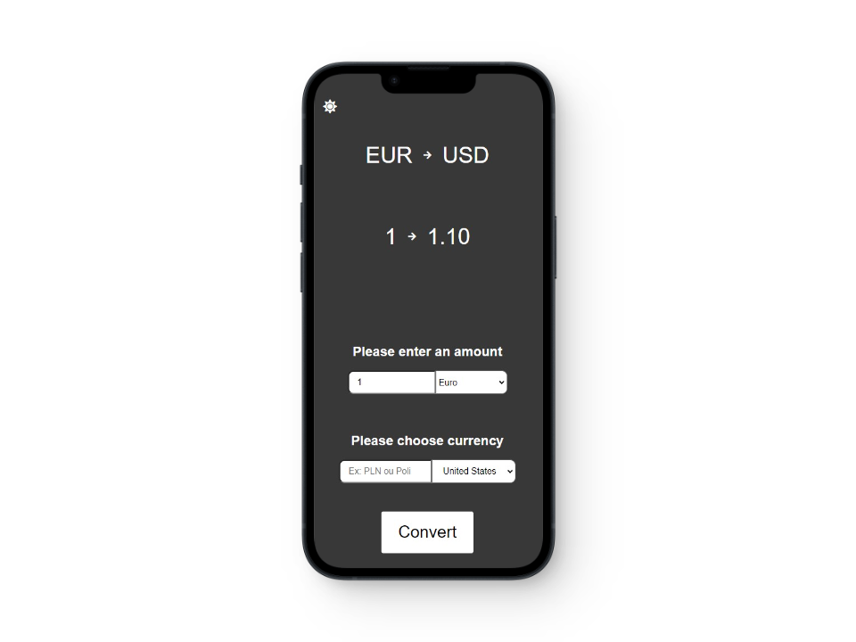
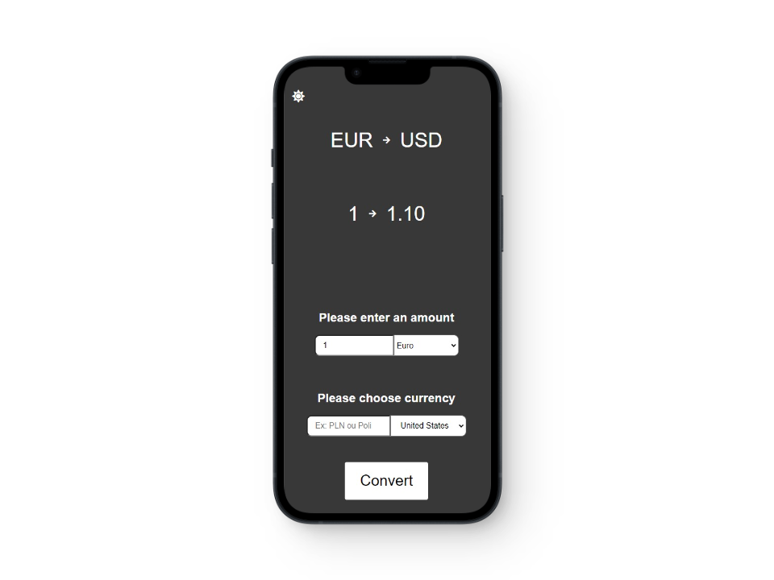

contact
Github
Mes projets
My projects
Zohaib Muhammad
Développeur Front-End
Front-end developer
Hey! Je suis Zohaib Muhammad, un développeur front-end passionné par la création de sites web esthétiques et fonctionnels. Je suis constamment à la recherche de nouvelles technologies à apprendre. Mon objectif est de devenir un développeur front-end expérimenté et de travailler sur des projets qui ont un impact positif sur les utilisateurs finaux.
Je maîtrise les langages HTML, CSS et JavaScript, ainsi que la création de thèmes WordPress. J'ai également travaillé avec des outils tels que Gulp pour l'automatisation des tâches de développement. Récemment, j'ai commencé à explorer le framework React.js pour développer des applications frontales plus complexes. Je suis toujours motivé pour apprendre de nouvelles technologies et améliorer mes compétences pour créer des sites web de haute qualité et des expériences utilisateur optimales.
Hey! I'm Zohaib Muhammad, a front-end developer passionate about creating aesthetic and functional websites. I am constantly on the lookout for new technologies to learn. My goal is to become an experienced front-end developer and work on projects that have a positive impact on end-users.
I am proficient in HTML, CSS, and JavaScript languages, as well as creating WordPress themes. I have also worked with tools such as Gulp for automating development tasks. Recently, I started exploring the React.js framework for developing more complex front-end applications. I am always motivated to learn new technologies and improve my skills to create high-quality websites and optimal user experiences.
Skills :


Training Studio
Ce projet est un site one page que j'ai créé en utilisant un template existant pour m'entraîner à utiliser des technologies front-end telles que HTML, CSS et JavaScript. Pour optimiser mon flux de travail, j'ai utilisé Gulp et Sass.
J'ai ajouté mon propre contenu et des fonctionnalités interactives. Ce projet m'a permis de consolider mes compétences en développement web.
This project is a one-page website that I created using an existing template to practice using front-end technologies such as HTML, CSS, and JavaScript. To optimize my workflow, I used Gulp and Sass.
I added my own content and interactive features. This project allowed me to consolidate my web development skills.
News
Ce projet est un site 5 pages pour une évaluation durant ma formation en utilisant un template existant.
J'ai utilisé HTML, CSS et JavaScript pour le construire.
This project is a 5-page website for an assessment during my training, using an existing template.
I used HTML, CSS, and JavaScript to build it.
To do list
J'ai créé une to-do list pour améliorer mes compétences en JavaScript et pour explorer les fonctionnalités de GSAP.
La to-do list permet aux utilisateurs d'ajouter des tâches, de les marquer comme complétées, de les filtrer et de les sauvegarder localement.
I created a to-do list to improve my JavaScript skills and to explore the features of GSAP.
The to-do list allows users to add tasks, mark them as completed, filter them, and save them locally.
Currency convertor
Ce projet a été créé pour me permettre d'apprendre à utiliser une API tierce pour récupérer des données et les afficher sur un site web.
L'objectif était de permettre aux utilisateurs de convertir un montant en euros vers n'importe quelle devise disponible. Une barre de recherche permet également de trouver plus facilement sa devise.
This project was created to allow me to learn how to use a third-party API to retrieve data and display it on a website.
The goal was to allow users to convert an amount in euros to any available currency. A search bar also makes it easier to find the desired currency.
Food52 Newsletter
Ce projet avait pour but de me permettre de confirmer mes compétences de base en HTML et en CSS en créant une newsletter.
L'objectif était de créer une mise en page simple et élégante pour présenter des informations de manière claire et concise.
This project aimed to allow me to confirm my basic skills in HTML and CSS by creating a newsletter.
The goal was to create a simple and elegant layout to present information clearly and concisely.

 
